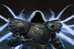

Hatalar Düzeltildi
* Çeşitli stabilite ve görsel iyileştirmeler.
Vesel of Hatred Genişletme Güncellemeleri
Nefret Gemisi Genişlemesi Varyana'nın edinme görevi sırasındaki sağlığı azaldı. Kurast Yeraltı Şehri'ndeki Portal Şakacı sandıkları da artık aktif Pazarlıktan etkileniyor. Rotasyona ek Nahantu temalı Yükleme Ekranları eklendi. Undercity of Kurast Tributes'un açıklamaları netlik sağlamak amacıyla iyileştirildi.
Vessel of Nefret Hata Düzeltmeleri
Karanlık Kale Karanlık Kale'de birden fazla eksik veya yanlış araç ipucu ve simge örneği düzeltildi. Khazra Kozmetik Eldiveni öğesinin kurtarılıp kaybolmasına neden olan sorun çözüldü. Oyun kumandasında oynarken Topluluk Mücadelesi kaidesiyle etkileşime geçilememesi sorunu düzeltildi. Enclave of Strife'ı tamamlamanın, Labyrinth of Souls'un kilidini açamaması sorunu düzeltildi. Karanlık Kale'nin tamamlanması için Kozmetik ödüllerin bazen düzgün şekilde verilmemesi sorunu düzeltildi. Faeroch'un Maze Malaise'i tutarlı bir şekilde kullanmaması sorunu düzeltildi. Hızlanan Rüzgar Tütsüsünden gelen yüklerin süresinin gerektiği gibi dolmaması sorunu düzeltildi. Karanlık Kale'deki Göz Alıcı Sandıkların, Kale Parası önbelleklerini düşürmemesi sorunu düzeltildi.
Kurast Yeraltı Şehri
Belirli bir saldırı kullanıldığında Longtooth'un geçici olarak görünmez hale gelmesi sorunu düzeltildi. Birincil Kaynak pazarlığının ilgili ekte eşya düşmesini garanti etmemesi sorunu düzeltildi. Parti aktif bir Kurast Undercity koşusundayken oyuncuların bir partiye katılabilme sorunu düzeltildi. Undercity koşusunun sonunda oyuncuların partiye katılıp ödülleri toplayabilmesi sorunu düzeltildi. Undercity tanıtım görevleri için grupta yalnızca bir oyuncunun kredi alması sorunu düzeltildi. Undercity koşularının zamanlayıcı etkinleştirilmeden başlatılabilmesine neden olan nadir bir sorun düzeltildi. Ruh Kurtları gibi çeşitli Çağrılan yoldaşların ölürken veya ortadan kaybolurken Uyumlama verebilme sorunu düzeltildi. Tribute of Titans'ın açıklamasında Lair Boss'ların yanı sıra başka kaynakların yer almaması sorunu düzeltildi.
Paralı Askerler
Aynı paralı askerin aynı anda işe alınmış ve askere alınmış olarak gösterilebilmesi sorunu düzeltildi. Zulmog ile konuştuktan sonra Varyana'nın edinim görevi sırasında ilerlemenin engellenebilmesi sorunu düzeltildi. Bir Paralı Askerin Pasif yeteneğinden kazanılan Bonus istatistiklerinin, onları yok ettikten sonra da devam edebilmesi sorunu düzeltildi. Takas görevinin ödül vermemesi sorunu düzeltildi. Takas kilidinin nasıl açılacağının açıkça bildirilmemesi sorunu düzeltildi
Helltide ve Kaleler
Bir Helltide sona erdikten sonra Blood Maiden'ı yenmenin ilgili Şampiyonun Deeds görevi hedefini ilerletmemesi sorunu düzeltildi. Chakhir'deki canavarların amaçlanandan daha az Deneyim vermesi sorunu düzeltildi.
Zindanlar
Unutulmuş Kalıntılar'ın sonunda hasar verilmediğinde Bloodhorn's Vortex'in görsel efektlerinin devam edebilmesi sorunu düzeltildi. Güneşte Pişmiş Gözetleme Mahzeni'nin tamamlanamaması sorunu düzeltildi.
Ruhdoğumlu
Spiritborn karakterlerinin Aç Nekrolit Önbelleğini kullanamaması sorunu düzeltildi. Ek Kaçış yükleri kazandıran botlarla birlikte Hızlanma puanlarına sahip olmanın, binerken Kaçış yüklerinin tüketilmesine neden olabilmesi sorunu düzeltildi. Harmony of Ebewaka tarafından uygulanan Ruh Salonu değişikliklerinin binekteyken veya şehirdeyken uygun Becerilerde görüntülenmemesi sorunu düzeltildi. Saptırma Unsurunun verilen hasarı göstermeme sorunu düzeltildi.
Görevler ve Etkinlikler
Thrust into the Dark görevi sırasında oyuncunun geçilemez bir barikatın arkasında yeniden doğabilmesi sorunu düzeltildi. Bazı Nahantu yan görevlerinin şöhret ödülleri vermeme sorunu düzeltildi. Akarat'ın Gücünü Topla hedefi atlandığında Tüm İyi Şeyler görevinin ilerleyememe sorunu düzeltildi. Bilinmeyen Hayatta Kalanlar görevinde oyuncunun kaçınılmaz bir alanda yeniden doğabileceği bir sorun düzeltildi. Seviye 40 gereksinimi olan bir İksir üretmenizi gerektirmesine rağmen Tarihin Ölçekleri görevinin Seviye 20'de kullanılabilir hale gelmesi sorunu düzeltildi. Nefret Habercisi'nin nadir durumlarda yenilmez bir durumda sıkışıp kalması sorunu düzeltildi. Yaşayan Hafıza görevi sırasında Gömülü Oda'dan ayrıldıktan sonra tüm canavarların Urivar'ın Emirlerini düşürebilmesi sorunu düzeltildi. Neyrelle'in Burning Crusade görevi sırasında sıkışıp kalarak ilerlemeyi engelleyebileceği nadir bir sorun düzeltildi. Oyuncu, çağırılmış Skeletal Skirmishers'lı bir Necromancer kullanıyorsa, The Way Out is Through görevi sırasında takipçilerin attan inememesi sorunu düzeltildi. Görevlerden ödüllendirilen eşyaların hatalı veya eksik eklere sahip olması sorunu düzeltildi. Putrid Bodypit mahzeninde ortaya çıktığında Tapınak Pusu olayının tamamlanamaması sorunu düzeltildi.
Miscellaneous
Pit gibi ekipman kilitli içeriklerde Mücevherlerin ve Rünlerin değiştirilebilmesi veya Yuvalardan kaldırılabilmesi sorunu düzeltildi. Takas yoluyla elde edilen Botların doğal Kaçış değiştirici ekinin eksik olması sorunu düzeltildi. Kuyumcunun Kurast Eğitim Alanı odasında bulunması sorunu düzeltildi.
Hatalar Düzeltildi
Çeşitli stabilite iyileştirmeleri.
Hydra'ların Nightmare Dungeons'ta Obducite'i düşürmesine neden olan sorun çözüldü.
Oyun Güncellemeleri
Kullanıcı Arayüzü ve Kullanıcı Deneyimi
Rünlerin üretim bildirimi artık kullanılan Rünler yerine neyin üretildiğini gösteriyor. Kuyumcuda rastgele Rünler üretmeye yönelik tarifler artık her tarif için gereken Rünleri içeriyor. Yuvalardaki Rünleri ve Mücevherleri değiştirmeye yönelik ipucunda artık bu bağlamda "soket" yerine "takas" yazıyor. Rünler ve Rün Kelimeleri için ipuçları, etkilerini daha iyi iletecek şekilde güncellendi. MasterWorking ipucu artık öğenin Masterwork edilebilmesi için iki kez Temperlenmesi gerektiğini gösteriyor. Malzemelerin işlenmesine yönelik çeşitli araç ipuçları ve simgeler, daha iyi okunabilirlik için güncellendi. Infernal Hordes ve Kurast Undercity artık Party Finder menüsünde Pit ve Dark Citadel gibi etkinliklerin yanı sıra en üst düzeydeki etkinliklerde yer alacak. Glif Yuvaları simgesi Paragon Panolarında görsel olarak daha belirgin olacak şekilde ayarlandı. Fiziksel Olmayan hasar istatistiği Karakter İstatistikleri penceresinden kaldırıldı.
Hatalar Düzeltildi
Çeşitli stabilite ve görsel iyileştirmeler.
Hatalar Düzeltildi
Çeşitli stabilite ve görsel iyileştirmeler.
Miscellaneous
Bu güncelleme, çeşitli kararlılık sorunlarını gidermek için ek arka uç günlük kaydı içerir.
Öne Çıkanlar
-

Demon Hunter: Gölgelerin Korkusu ve Hız
Diablo 4’ün güçlü karakterlerinden biri olan Demon Hunter...
-

Barbarian: Güç ve İhtişam
Barbarian, savaş alanının efendisi olarak tanınır...